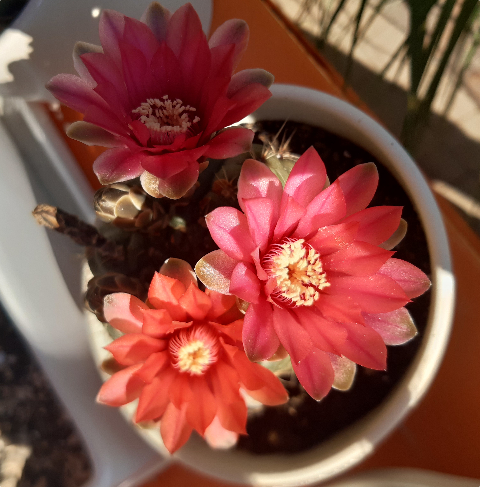
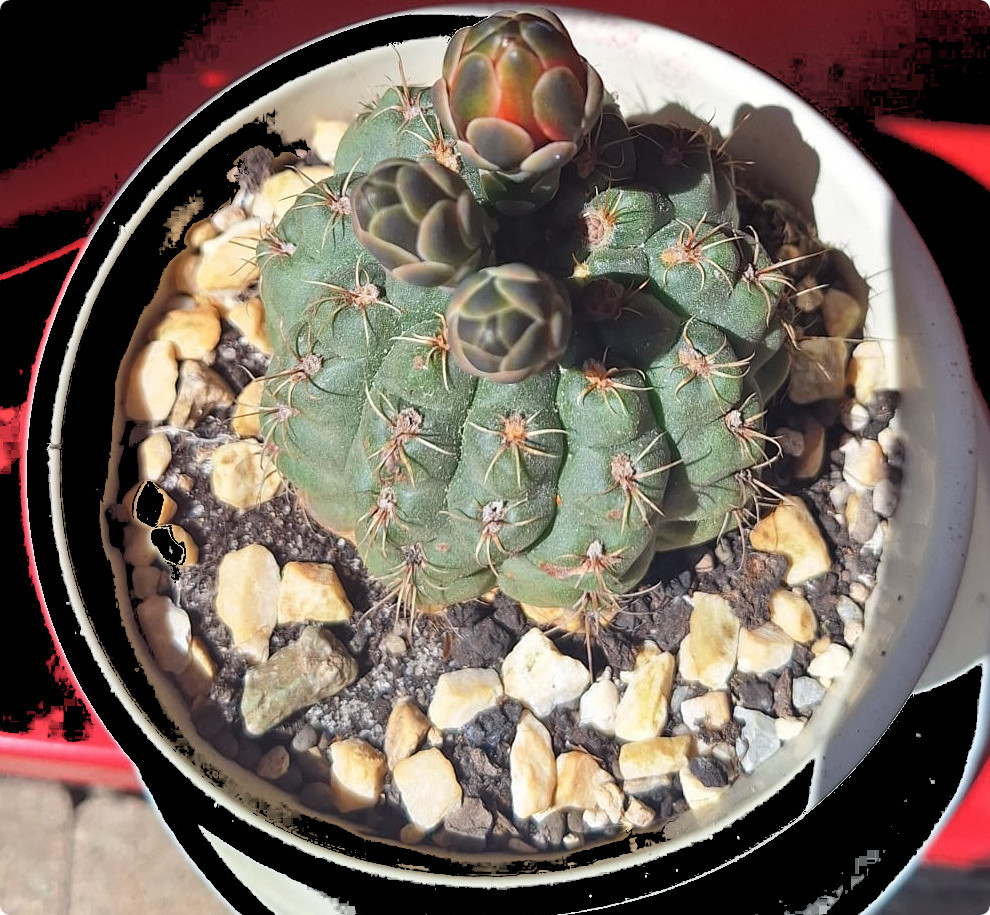
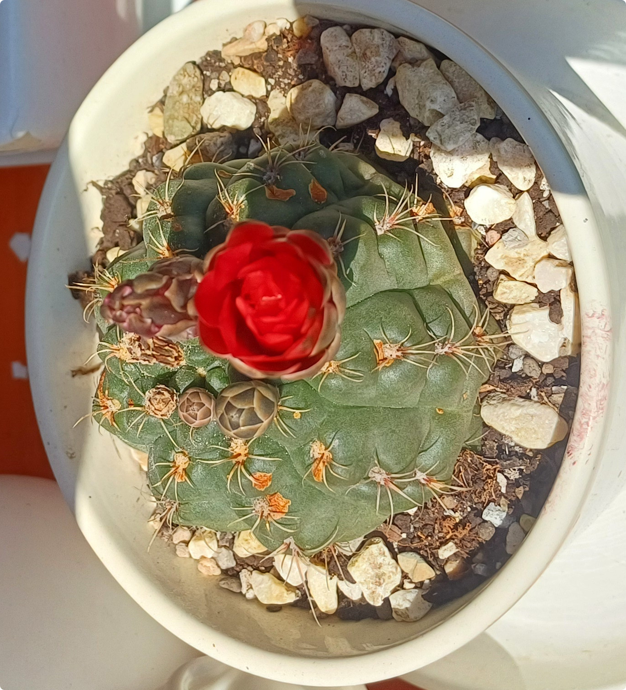

Nazwa zwyczajowa: kaktus pająk
Rodzina: Cactaceae
🌍 Występowanie
Pochodzi z Argentyny, głównie z prowincji Catamarca...
🌱 Opis morfologiczny
- Kształt: kulisty, lekko spłaszczony
- Średnica: 6–13 cm
- Żebra: 9–11...
🌸 Kwiaty
- Duże, lejkowate...
🍒 Owoce i rozmnażanie
- Owoce: zielone...
🌞 Wymagania uprawowe
- Światło: jasne stanowisko...
🏆 Ciekawostki
Gatunek ten otrzymał Nagrodę Zasług Ogrodniczych RHS...
📷 Zdjęcia z prywatnej kolekcji
Prezentowane poniżej fotografie pochodzą z prywatnych zbiorów...


